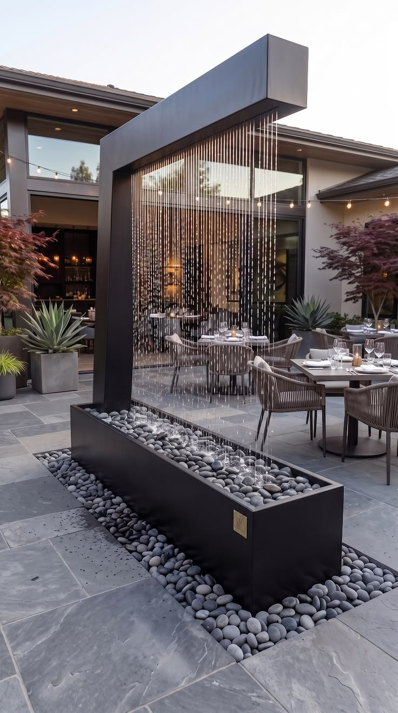

Care Guide
Caring for your fountain in every season
A simple care routine for the basin, pump and stone finish helps keep your water feature looking its best.
5 min read
Notes on water & stone
A simple care routine for the basin, pump and stone finish helps keep your water feature looking its best.
5 min read

Learn how proportions, viewing distance and available space influence the right fountain for your setting.
7 min read

Explore how reflecting pools and clean water lines can complement contemporary architecture.
4 min read

Sections, falls and flow rates explained — what to check before you approve your custom drawings.
6 min read

A well-placed fountain can bring balance, sound and a sense of arrival to an outdoor space.
8 min read

Wall fountains deliver the full sound of water in two square metres. Here's how to choose one.
4 min read
Have a question about fountain design or maintenance? Send it to our team and we will be happy to discuss.
Ask us on WhatsApp ?